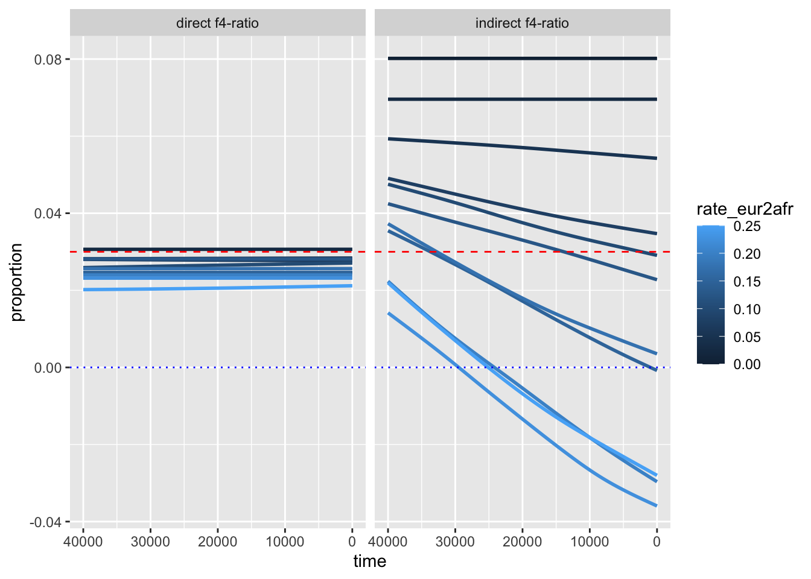
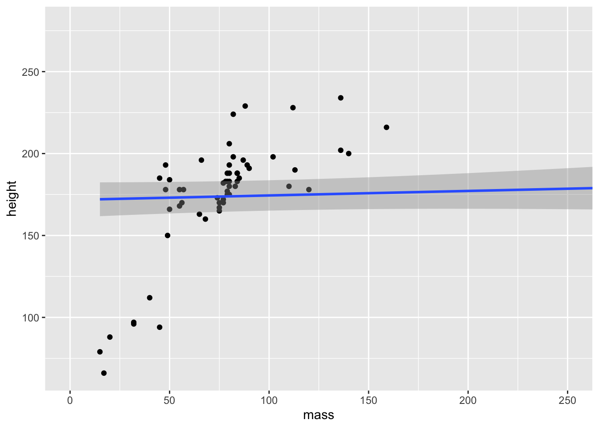

library(ggplot2) # the star of the day!
library(dplyr)
library(tidyr)
library(readr)Visualization and advanced concepts
In this chapter, we will be delving into the data visualization R package called ggplot2, which is possibly the most famous piece of the tidyverse ecosystem. So much so that people who otherwise don’t use any tidyverse functions (or even who don’t even use R for data analysis itself) still use ggplot2 for making figures. It really is that good.
In this chapter we will demonstrate new (and previously introduced) tidyverse concepts in a real-world example, and build an example processing and filtering pipeline for a new IBD data set and metadata. We will proceed step by step, adding new components to the pipeline, before we learn how to wrap it up in a clean module (an R script) with functions which will be reusable in various ways in later parts of the workshop.
This is a real world example! You will be retracing the steps I had to work through in my job in August 2025 where I got sent a completely unfamiliar new data set of IBD segments and asked to do some science with it. 😳
As always, text expressed in bold represents tasks for you to do–code to run, things to think about!
Here is how the start of our solutions script for the day will look like. Note the addition of library(ggplot2) to the list of R packages used in the previous chapter. Although you could use ggplot2 without the rest, it ties so neatly with every other part of the tidyverse ecosystem that you almost always end up using them together.
Tip 1
As always, if you’re ever unsure about some function, don’t forget you can use ?function_name to get help on how it works, what are its optional arguments, and (on the bottom of the help page) see copy-pasteable examples you can try to get intuition into how that function works in practice!
I really do this every single day for every function I’m not sure about. It’s incredibly helpful.
Tip 2
Never forget that you can solve every R problem by building a solution up one little step at a time. First work in the R console, try bits and pieces of code interactively, and only when you’re sure you understand the problem (and solution) you can finalize it by writing it in your solution script (often saving the result in a variable for later use).
This helps a huge deal to avoid feeling overwhelmed by what can initially seem like a problem that’s too hard!
Even testing things one line, one command at a time, helps a lot. So whenever I give you a chunk of R code, always write it out in your own scripts or R console and run it (or, if it’s too long, just copy it… but typing it out manually engages your memory banks more efficiently).
Let us also read in data which we will be using in these exercises. These are coordinates of identity-by-descent (IBD) segments between pairs of individuals in a huge aDNA study we’ve already talked about. This data is huge and quite complex – I’ve prefiltered it to contain only IBD segments for chromosome 1.
Why use IBD for these exercises? First, IBD data are increasingly popular across population genomics and evolutionary biology, so it’s very likely you will encounter it in your own work. Second, it’s an excellent data se on which you can practice and develop your data science skills.
ibd_segments <- read_tsv("https://tinyurl.com/simgen-ibd-segments")Rows: 461858 Columns: 6
── Column specification ────────────────────────────────────────────────────────
Delimiter: "\t"
chr (3): sample1, sample2, rel
dbl (3): chrom, start, end
ℹ Use `spec()` to retrieve the full column specification for this data.
ℹ Specify the column types or set `show_col_types = FALSE` to quiet this message.And we also need to read the corresponding metadata, with which you are already very closely familiar with:
metadata_all <- read_tsv("https://tinyurl.com/simgen-metadata")Rows: 4072 Columns: 24
── Column specification ────────────────────────────────────────────────────────
Delimiter: "\t"
chr (16): sampleId, popId, site, country, region, continent, groupLabel, gro...
dbl (8): latitude, longitude, age14C, ageHigh, ageLow, ageAverage, coverage...
ℹ Use `spec()` to retrieve the full column specification for this data.
ℹ Specify the column types or set `show_col_types = FALSE` to quiet this message.Skim through the messages given by read_tsv() above. I personally find them annoying and often silence them in finished pipelines or reports (how can you silence them?) but it is good to keep an eye on them when you’re starting because they give you an overview of data types!
Create a new R script in RStudio, (File -> New file -> R Script) and save it somewhere on your computer as tidy-viz.R (File -> Save). Copy the two chunks of code above into it and let’s get started!
You just got a new data set from a bioinformatics software, in this case the IBDseq software for detecting IBD segments between pairs of individuals. Before you proceed with doing any kind of statistical analysis you need to do two things:
- Exploring the data to see what is it that you just got.
- Filtering and processing it in a way which will make your work easier.
Let’s tackle step 1 first.
Exercise 1: Exploring new data
As a sanity check, do you have metadata information for every individual in the sample1 and sample2 columns of the IBD table? What about the other way around – do all individuals in the metadata have some IBD relationship to another individual? If not, find out which individuals are these.
This is another sort of sanity checking you will be doing all the time. We can only analyze data for which we have metadata information (population assignment, geographical location, dating information), so let’s make sure we have what we need.
Hint: Another way to phrase this question is this: does every name that appears in either sample1 or sample2 column of ibd_segments have a record in the sampleId column of metadata_all (i.e., is information in one vector of names a perfect subset of the second vector of names)? Remember that you can use the function unique() to get all unique values in a given vector (as in, all unique values in vector ibd$sample1 which has otherwise many duplicated entries). And remember the existence of %in% and ! operators!
Which columns does the IBD data have? What’s the format of the data? What ranges or distributions of values do you have available, and with what data types? Do you have information for the entire genome?
Hint: head(), colnames(), glimpse(), str(), table(), summary() which are either applicable to an entire data frame, or a specific column (columns being indexable with the $ or [[ ]] operators, of course).
Exercise 2: IBD processing
Add a new column to the ibd_segments data frame using the mutate() function called length, which contains the length of each IBD segment in centimorgans (end - start). Save the data frame that mutate() returns back to the variable ibd_segments.
Note: Sometimes saving new things to already-defined variables leads to very messy code. In this instance, we’re basically building up a processing pipeline whose purpose is to filter / mutate / clean a data frame for downstream use. In fact, later we will add individual steps of this pipeline into its own function! In cases like this, it’s OK to reuse the same variable name in several subsequent steps.
Exercise 3: Metadata processing
We have read our IBD table and added a new useful column to it, so let’s proceed with the metadata. There will be another important IBD processing step below where we merge both data sets together, but for that we need to do a bit more processing of the metadata_all first.
First, there’s much more information than we need for now, just take a look:
colnames(metadata_all) [1] "sampleId" "popId" "site" "country" "region"
[6] "continent" "groupLabel" "groupAge" "flag" "latitude"
[11] "longitude" "dataSource" "age14C" "ageHigh" "ageLow"
[16] "ageAverage" "datingSource" "coverage" "sex" "hgMT"
[21] "gpAvg" "ageRaw" "hgYMajor" "hgYMinor" head(metadata_all)# A tibble: 6 × 24
sampleId popId site country region continent groupLabel groupAge flag
<chr> <chr> <chr> <chr> <chr> <chr> <chr> <chr> <chr>
1 NA18486 YRI <NA> Nigeria WestAfrica Africa YRI Modern 0
2 NA18488 YRI <NA> Nigeria WestAfrica Africa YRI Modern 0
3 NA18489 YRI <NA> Nigeria WestAfrica Africa YRI Modern 0
4 NA18498 YRI <NA> Nigeria WestAfrica Africa YRI Modern 0
5 NA18499 YRI <NA> Nigeria WestAfrica Africa YRI Modern 0
6 NA18501 YRI <NA> Nigeria WestAfrica Africa YRI Modern 0
# ℹ 15 more variables: latitude <dbl>, longitude <dbl>, dataSource <chr>,
# age14C <dbl>, ageHigh <dbl>, ageLow <dbl>, ageAverage <dbl>,
# datingSource <chr>, coverage <dbl>, sex <chr>, hgMT <chr>, gpAvg <dbl>,
# ageRaw <chr>, hgYMajor <chr>, hgYMinor <chr>Let’s make the data a bit smaller and easier to look at at a glance.
Use select() a subset of the metadata with the following columns and store it in a new variable metadata (we don’t want to overwrite the original big table metadata_all in case we need to refer to it a bit later): sampleId, country, continent, ageAverage. Then rename() sampleId to sample, popId to pop, and ageAverage to age just to save ourselves some typing later.
Just as you did in the previous chapter, use mutate() and if_else() inside the mutate() call to make sure that the “modern†individuals have the age set to 0, instead of NA (and everyone else’s age stays the same). In other words, for rows where age is NA, replace that NA with 0.
Hint: Remember the is.na() bit we used before! Try it on the age column vector if you need a reminder: is.na(metadata$age).
Our analyses will exclusively focus on modern humans. Filter out the three archaics in the metadata, saving the results into the same metadata variable again. As a reminder, these are individuals whose sample name is among c("Vindija33.19", "AltaiNeandertal", "Denisova") which you can test in a filter() command using the %in% operator.
Hint: Remember that you can get a TRUE / FALSE indexing vector (remember our R bootcamp session!) by not only column %in% c(... some values...) but you can also do the opposite test as !column %in% c(... some values...) (notice the ! operator in the second version).
Status of our data so far
We now have a cleaner IBD table looking like this:
head(ibd_segments)# A tibble: 6 × 7
sample1 sample2 chrom start end rel length
<chr> <chr> <dbl> <dbl> <dbl> <chr> <dbl>
1 HG01571 NA18997 21 49.5 51.5 none 2.04
2 HG03304 HG03518 21 40.1 43.9 none 3.80
3 AHUR_2064 939 21 10.7 11.9 none 1.15
4 HG00620 NA18593 21 31.3 33.5 none 2.16
5 VK236 VK245 21 20.1 31.8 none 11.7
6 VK224 HG03931 21 10.9 11.9 none 0.989And here’s our metadata information:
head(metadata)# A tibble: 6 × 4
sample country continent age
<chr> <chr> <chr> <dbl>
1 NA18486 Nigeria Africa 0
2 NA18488 Nigeria Africa 0
3 NA18489 Nigeria Africa 0
4 NA18498 Nigeria Africa 0
5 NA18499 Nigeria Africa 0
6 NA18501 Nigeria Africa 0In our original metadata_all table we have the groupAge column with these values:
table(metadata_all$groupAge)
Ancient Archaic Modern
1664 3 2405 Note that in the new metadata we removed it because it’s not actually useful at all for most data analysis purposes because it has only three values.
For instance, later we might want to do some fancier analyses, looking at IBD as a time series, not just across basically two temporal categories, “young†and “old”.
To this end, let’s create more useful time-bin categories! This will require a bit more code than above solutions. Don’t feel overwhelmed! I will first introduce a useful function using a couple of examples for you to play around with in your R console. Only then we will move on to an exercise in which you will try to implement this on the full metadata table! For now, keep on reading and experimenting in your R console!
Let’s introduce an incredibly useful function called cut(). Take a look at ?cut help page and skim through it to figure out what it does. As a bit of a hint, we will want to add a new metadata column which will indicate in which age bin (maybe, split in steps of 5000 years) do our individuals belong to.
Here’s a small example to help us get started. Imagine that df is a example representative of our full-blown metadata table:
# a toy example data frame mimicking the age column in our huge metadata table
df <- data.frame(
sample = c("a", "b", "c", "d", "x", "y", "z", "q", "w", "e", "r", "t"),
age = c(0, 0, 1000, 0, 5000, 10000, 7000, 13000, 18000, 21000, 27000, 30000)
)
df sample age
1 a 0
2 b 0
3 c 1000
4 d 0
5 x 5000
6 y 10000
7 z 7000
8 q 13000
9 w 18000
10 e 21000
11 r 27000
12 t 30000Think about what the cut() function does here based on the result it gives you on this little table. You can pretend for now that the ages variable corresponds to age of our samples in the huge metadata table:
# let's first generate the breakpoints for our bins (check out `?seq` if
# you're confused by this!)
breakpoints <- seq(0, 50000, by = 5000)
breakpoints [1] 0 5000 10000 15000 20000 25000 30000 35000 40000 45000 50000# binning the age into groups using our breakpoints
df$age_bin <- cut(df$age, breaks = breakpoints)
df sample age age_bin
1 a 0 <NA>
2 b 0 <NA>
3 c 1000 (0,5e+03]
4 d 0 <NA>
5 x 5000 (0,5e+03]
6 y 10000 (5e+03,1e+04]
7 z 7000 (5e+03,1e+04]
8 q 13000 (1e+04,1.5e+04]
9 w 18000 (1.5e+04,2e+04]
10 e 21000 (2e+04,2.5e+04]
11 r 27000 (2.5e+04,3e+04]
12 t 30000 (2.5e+04,3e+04]Note: The function cut() is extremely useful whenever you want to discretize some continuous variable in bins (basically, a little similar to what a histogram does in context of plotting). Doing statistics on this kind of binned data is something we do very often. So never forget that cut() is there to help you! For example, you could also use the same concept to partition samples into categories based on “low coverage”, “medium coverage”, “high coverage”, etc.
In the example of the cut() function right above, what is the data type of the column age_bin created by the cut() function? Use glimpse(df) to see this data type, then skim through the documentation of ?factor. What is a “factor†according to this documentation?
Note: This is a challenging topic. Please don’t stress. I’ll walk through everything myself, interactively, and will explain things in detail. Take this information on “factors†as something to be aware of and a concept to be introduced to, but not something to necessarily be an expert on!
Having learned about ?factor above, consider the two following vectors and use them for experimentation when coming up with answers. What do you see when you print them out in your R console (by typing x1 and x2)? And what happens when you apply the typeof() function on both of them? x2 gives you a strange result – why? What do you get when you run the following command levels(x2)? What do you get when you run as.character(x2)?
x1 <- c("hello", "hello", "these", "are", "characters/strings")
x2 <- factor(x1)In applying cut() to the toy data frame df, why is the age_bin value equal to NA for some of the rows?
Note: The discussion of “factors†should’ve been technically part of our R bootcamp chapter, on the topic of “data types”. However, that section was already too technical, so I decided to move it here to the data analysis section, because I think it makes more sense to explain it in a wider context.
The scientific notation format of bin labels with 5+e3 etc. is very annoying to look at. How can you use the dig.lab = argument of the cut() functions to make this prettier? Experiment in the R console to figure this out, then modify the df$age_bin <- cut(df$age, breaks = breakpoints) command in your script accordingly.
You have now learned that cut() has an optional argument called include.lowest =, which includes the lowest value of 0 (representing the “present-day†age of our samples) in the lowest bin [0, 5]. However, in the case of our assignment of samples from present-day, this is not what we want. We want present-day individuals to have their own category called “present-day”.
Here’s a useful bit of code I use often for this exact purpose, represented as a complete self-contained chunk of the time-binning code. If we start from the original toy example data frame (with the NA values assigned to present-day ages of 0):
df sample age age_bin
1 a 0 <NA>
2 b 0 <NA>
3 c 1000 (0,5000]
4 d 0 <NA>
5 x 5000 (0,5000]
6 y 10000 (5000,10000]
7 z 7000 (5000,10000]
8 q 13000 (10000,15000]
9 w 18000 (15000,20000]
10 e 21000 (20000,25000]
11 r 27000 (25000,30000]
12 t 30000 (25000,30000]We can fix this by the following three-step process, described in the comments. Don’t stress about any of this! Just run this code on your own and try to match the # text in comments to the respective code. Every thing that’s being done here are bits and pieces introduced above.
# 0. assign each row to a bin based on given breakpoints
df$age_bin <- cut(df$age, breaks = breakpoints, dig.lab = 10)
# 1. extract labels (no "present-day" category yet)
bin_levels <- levels(df$age_bin)
df <-
df %>%
mutate(
age_bin = as.character(age_bin), # 2. convert factors back to "plain strings"
age_bin = if_else(is.na(age_bin), "present-day", age_bin), # 3. replace NA with "present-day",
age_bin = factor(age_bin, levels = c("present-day", bin_levels)) # 4. convert to factor (to maintain order of levels)
)When we print the modified df table, we see all bins properly assigned now, including the present-day samples with ages at 0:
df sample age age_bin
1 a 0 present-day
2 b 0 present-day
3 c 1000 (0,5000]
4 d 0 present-day
5 x 5000 (0,5000]
6 y 10000 (5000,10000]
7 z 7000 (5000,10000]
8 q 13000 (10000,15000]
9 w 18000 (15000,20000]
10 e 21000 (20000,25000]
11 r 27000 (25000,30000]
12 t 30000 (25000,30000]This is a very useful pattern which you will get to practice now on the full metadata table, by literally applying the same code on the big table.
Now that you’re familiar with cut(), use the functions mutate() and cut() again (in exactly the same way as we did on the df table in the code chunk above!) to create a new column age_bin this time on the whole metadata table. The new column should carry a category age of each individual in steps of 10000 years again. Use `table(metadata$age_bin) to sanity check your final results.
Hint: As we did above, first assign the age_bin column using the cut() function, then modify the column accordingly with the mutate() snippet to set “present-day†in the age_bin for all present-day individuals.
Recipe for merging metadata
After basic processing and filtering of the primary data (in our case, the genomic coordinates of pairwise IBD segments), we often need to annotate this data with some meta information. What does this mean? Take a look at our IBD data in its current state again:
head(ibd_segments)# A tibble: 6 × 7
sample1 sample2 chrom start end rel length
<chr> <chr> <dbl> <dbl> <dbl> <chr> <dbl>
1 HG01571 NA18997 21 49.5 51.5 none 2.04
2 HG03304 HG03518 21 40.1 43.9 none 3.80
3 AHUR_2064 939 21 10.7 11.9 none 1.15
4 HG00620 NA18593 21 31.3 33.5 none 2.16
5 VK236 VK245 21 20.1 31.8 none 11.7
6 VK224 HG03931 21 10.9 11.9 none 0.989When we analyze things down the line, we might want to look at IBD patterns over space and time, look at some temporal changes, etc. However, our IBD data has none of the information in it! Besides names of individuals (from which population, at which time, which geographical location?) we have nothing, so even if we were to do run our friends group_by() and summarize() to get some summary statistics, we have no idea to correlate them to other variables… precisely because those variables are elsewhere in a completely different table we called metadata.
We now need to put both sources of information into a single joint format. I call this “metadata merging”, and it is something we always want to do regardless of what kinds of statistics or measures we work with.
Again, the annotation that we need is in the metadata table – it has information about ages and geography:
head(metadata)# A tibble: 6 × 5
sample country continent age age_bin
<chr> <chr> <chr> <dbl> <fct>
1 NA18486 Nigeria Africa 0 present-day
2 NA18488 Nigeria Africa 0 present-day
3 NA18489 Nigeria Africa 0 present-day
4 NA18498 Nigeria Africa 0 present-day
5 NA18499 Nigeria Africa 0 present-day
6 NA18501 Nigeria Africa 0 present-dayWhat we need to do is join our IBD data with a selection of the most important variables in our metadata, which is what we’re going to do now.
This bit might be a bit frustrating and repetitive if we made this into an exercise for you, so just inspect the following code, run it yourself (and put it into your own script) and try to make sense of it. Take this as a recipe that you can modify and reuse in your own projects later!
I’m happy to answer questions!**
1. For each IBD segment (a row in our table ibd_segments) we
have two individuals on each row, sample1 and sample2. Therefore, we will need to annotate each row of the ibd_segments table with metadata information for both individuals. Let’s start by making a copy of the metadata table, caling those copies metadata1 and metadata2:
metadata1 <- metadata
metadata2 <- metadata2. The columns of these metadata copies are the same, which you can verify by running this:
colnames(metadata1)[1] "sample" "country" "continent" "age" "age_bin" colnames(metadata2)[1] "sample" "country" "continent" "age" "age_bin" Obviously this doesn’t work if we want to refer to a location of sample1 or sample2, respectively. Here’s another useful trick for this. Observe what paste0() function does in this situation:
# original columns
colnames(metadata1)[1] "sample" "country" "continent" "age" "age_bin" # columns with a number added after
paste0(colnames(metadata1), "1")[1] "sample1" "country1" "continent1" "age1" "age_bin1" We can use the same approach to assign new columns to each of our metadata copies:
colnames(metadata1) <- paste0(colnames(metadata1), "1")
colnames(metadata2) <- paste0(colnames(metadata2), "2")Now we have both metadata tables with columns renamed. Let’s check this to make sure we did this correctly:
colnames(metadata1)[1] "sample1" "country1" "continent1" "age1" "age_bin1" colnames(metadata2)[1] "sample2" "country2" "continent2" "age2" "age_bin2" 3. We are ready to join the table of IBD segments
The final piece of the puzzle is a JOIN operation from the realm of computer databases. A rather complex topic, which can be interpreted very easily in our situation, which can be represented by the following diagram of a so-called “inner join”:
 What this operation does is that it creates a “merged†table, consisting of the columns of both “left†and “right†tables, where the “merged†table rows consist of such rows from “left†and “right”, where the two tables have a matching “key†column (here highlighted in green). Just take a moment and try to trace the one row of the “merged†table to the row(s) of the “left†and “right†tables based on the value of the green key column in both of them.
What this operation does is that it creates a “merged†table, consisting of the columns of both “left†and “right†tables, where the “merged†table rows consist of such rows from “left†and “right”, where the two tables have a matching “key†column (here highlighted in green). Just take a moment and try to trace the one row of the “merged†table to the row(s) of the “left†and “right†tables based on the value of the green key column in both of them.
Now, consider the columns of our three tables now:
ibd_segmentscolumns:
[1] "sample1" "sample2" "chrom" "start" "end" "rel" "length" metadata1andmetadata2columns:
[1] "sample1" "country1" "continent1" "age1" "age_bin1" [1] "sample2" "country2" "continent2" "age2" "age_bin2" Here’s what happens when you perform an inner join like this (note that we specify by what column should we be merging, effectively saying which column is the key corresponding to the green column in the diagram above):
ibd_merged <- inner_join(ibd_segments, metadata1, by = "sample1")Our IBD table now has added metadata information for individuals in column sample1, awesome! We can verify this by listing all column names:
# original IBD table:
colnames(ibd_segments)[1] "sample1" "sample2" "chrom" "start" "end" "rel" "length" # IBD table with metadata1 merged in:
colnames(ibd_merged) [1] "sample1" "sample2" "chrom" "start" "end"
[6] "rel" "length" "country1" "continent1" "age1"
[11] "age_bin1" How do we add metadata for the second sample? We do it in the same way, except now we join in the second table (and we save the results to a new variable ibd_merged, to be able to compare the differences):
ibd_merged <- inner_join(ibd_merged, metadata2, by = "sample2")In fact, I do this so often for basically every computational biology project, that I like to use this concise bit of code to do it all in one go:
ibd_merged <-
ibd_segments %>% # 1. primary data without metadata
inner_join(metadata1, by = "sample1") %>% # 2. add metadata for sample1
inner_join(metadata2, by = "sample2") # 3. add metadata for sample2Again, we can verify that our new table has metadata columns for both sample1 and sample2:
colnames(ibd_segments)[1] "sample1" "sample2" "chrom" "start" "end" "rel" "length" colnames(ibd_merged) [1] "sample1" "sample2" "chrom" "start" "end"
[6] "rel" "length" "country1" "continent1" "age1"
[11] "age_bin1" "country2" "continent2" "age2" "age_bin2" Exercise 4. Final data processing
You’ve already seen the super useful function paste() (and also paste0()) which useful whenver we need to join the elements of two (or more) character vectors together. The difference between then is that paste0() doesn’t add a space between the individual values and paste() does (the latter also allows you to customize the string which should be used for joining instead of the space).
Take a look at your almost finalized table ibd_merged:
head(ibd_merged)# A tibble: 6 × 15
sample1 sample2 chrom start end rel length country1 continent1 age1
<chr> <chr> <dbl> <dbl> <dbl> <chr> <dbl> <chr> <chr> <dbl>
1 HG01571 NA18997 21 49.5 51.5 none 2.04 Peru America 0
2 HG03304 HG03518 21 40.1 43.9 none 3.80 Nigeria Africa 0
3 AHUR_2064 939 21 10.7 11.9 none 1.15 USA America 10970
4 HG00620 NA18593 21 31.3 33.5 none 2.16 China Asia 0
5 VK236 VK245 21 20.1 31.8 none 11.7 Faroes Europe 250
6 VK224 HG03931 21 10.9 11.9 none 0.989 Russia Europe 850
# ℹ 5 more variables: age_bin1 <fct>, country2 <chr>, continent2 <chr>,
# age2 <dbl>, age_bin2 <fct>When we get to comparing IBD patterns between countries, time bins, etc., it might be useful to have metadata columns specific for that purpose. What do I mean by this? For instance, consider these two vectors and the result of pasting them together. Having this combined pair information makes it very easy to cross-compare multiple sample categories together:
v1 <- c("Denmark", "Czech Republic", "Estonia")
v2 <- c("Finland", "Italy", "Estonia")
paste(v1, v2, sep = ":")[1] "Denmark:Finland" "Czech Republic:Italy" "Estonia:Estonia" Let’s create this information for country, continent, and age_bin columns (remember that you have those for 1 and 2 samples!).
Specifically, use the same paste() trick to add a new column to your ibd_merged table named country_pair, which will contain a vector of values created by joining of the columns country1 and country2. Add this column .before the chrom column for clearer visibility (check out ?mutate if you need a refresher on how does its .before = argument work). Then do the same to create a region_pair based on continent1 and continent2. Save the result back to the ibd_merged variable.
Hint: Note that you can create multiple new columns with mutate(), but you can also pipe %>% one mutate() into another mutate() into another mutate(), etc.!
**In addition to computing statistics across pairs of geographical regions, we will also probably want to look at temporal patterns. Create a new column time_pair, which will in this case contains a paste() combination of age_bin1 and age_bin2, added .after the region_paircolumn. Save the result back to theibd` variable.**
Exercise 5: Reproducibility intermezzo
You have written a lot of code in this chapter, both for filtering and processing of the IBD data and the metadata. Your script is already very long. If you need to ever update or change something (which you always will during a project, usually many times over) it can be hard to figure out which line of your script should be modified. If you forget to update something somewhere in a long script, you’re in big trouble (and sometimes you won’t even find out where’s the problem until its too late).
Our session on reproducibility is in the following chapter, but let’s work towards making your current workflow more reproducible even now.
Create a new script called ibd_utils.R in your RStudio and create the following functions. Then take bits and pieces from the exercises used above and add them to the bodies of these functions accordingly.
Don’t forget to load all packages needed using
library()calls at the top of theibd_utils.Rscript.function
process_ibd()which will (without accepting any arguments):
- read the IBD data from the internet like you did above using
read_tsv() - process it in the same way you did above, adding the length column
- return the processed table with IBD segments in the same way like you produced the
ibd_segmentsdata frame
- function
process_metadata(), which will (accepting a singlebin_stepargument!):
- download the metadata from the internet like you did above,
- process and filter it in the same way like above (replacing
NAinagecolumn, filtering out unwanted individuals, adding theage_bincolumn by binning according to thebin_stepfunction parameter, etc.) - return the processed table with this processed metadata in the same way like you produced the
metadatadata frame
- function
join_metadata(), which will accept argumentsibd_segmentsandmetadata(produced by the two functions above) and then:
- join the
ibd_segmentstable with themetadatatable - add the three
country_pair,region_pair, andtime_paircolumns - return the finalized table with all information, just like you created your
ibd_mergedtable above
Do not write all the code at once! Start with the first function, test it by executing it in your R console independently, checking that your results make sense before you move on to the other function! Building up more complex pipelines from simple components is absolutely critical to minimize bugs!
Make sure to add comments to your code! Reproducibility is only half of the story – you (and other people) need to be able to understand your code a long time after you wrote it.
Hint: If this looks overwhelming and scary, then remember that function is a block of code (optionally accepting arguments) which simply wraps in { and } the code already written by you above, and calls return on the result.
Hint: An extremely useful shortcut when writing R functions is “Run function definition†under Code -> Run region. Remember that keyboard shortcut! (On macOS it’s Option+CMD+F).
After you’re done with the previous exercise, and are confident that your functions do what they should, create a new script (you can name it something like ibd_pipeline.R) and be able to add the following code. As a final test, restart your R session (Session -> Restart R) and run this script.
Note: The source() command executes all the code in your utility script and therefore makes your custom-built functions available in your R session. This is an incredibly useful trick which you should use all the time whenever you modularize your code into reproducible functions in their own scripts.
source("ibd_utils.R")
metadata <- process_metadata()
ibd_segments <- process_ibd(bin_step = 10000)
ibd_merged <- join_metadata(ibd_segments, metadata)Downloading and processing metadata...Downloading and processing IBD data...Rows: 461858 Columns: 6
── Column specification ────────────────────────────────────────────────────────
Delimiter: "\t"
chr (3): sample1, sample2, rel
dbl (3): chrom, start, end
ℹ Use `spec()` to retrieve the full column specification for this data.
ℹ Specify the column types or set `show_col_types = FALSE` to quiet this message.Joining IBD data and metadata...Congratulations! You’ve just passed an important milestone of learning how to structure and modularize your code in a reproducible, efficient way!
This is not a joke and I really, really mean it. Most scientists sadly never reach this point in their careers, ever. Over the next sessions you will see how much difference does (admittedly very annoying!) setup makes. Trust me!
It’s worth pausing here and reflecting on what we’ve just done. Yes, we took (lots!) of code already written and basically “just moved it elsewhere”. But consider how clean your new script ibd_pipeline.R is and how easily readable it is. What we’ve done is sometimes called “abstraction†in software engineering. We took components of our pipeline, and “hidden†them away so that we no longer have to think in terms of select(), filter(), group_by(), etc. We now can think about steps called process_ibd(), process_metadata(), and join_metadata(). Much less code to look at and think about! Plus, if we do need to take a deep dive into details, we just have to look at the code of our functions!
**Point your cursor somewhere inside the process_ibd() call in your new script ibd_pipeline.R and press “CTRL+.”. This is how easy it is to navigate code, even when we modularized it!
Having your processing and filtering code available in a self-contained modularized way will make a huge difference in later parts of our workshop.
Exercise 6: Data visualization with ggplot2
An important, powerful, and even elegant concept with building visualizations using ggplot2 is the idea of layering.
Distribution of a categorical variable
Let’s start very simply, and introduce the layering aspect of ggplot2 visualization package step by step. Our data frame has a column age_bin, which contains the assignment of each individual into a respective time period. Let’s start by visualizing the count of individuals in each time bin.
geom_bar()
ggplot(metadata)
ggplot(metadata, aes(x = age_bin))
ggplot(metadata, aes(x = age_bin)) + geom_bar()
Let’s add more layers! Use a xlab() function to add an x-axis label element using the + operator.
Click to see the solution
Just as we did with tidyverse %>% data transformation pipelines, as a ggplot2 visualization pipeline gets more complex, it’s a good idea to introduce indentation so that each visualization steps is on its own line.
ggplot(metadata, aes(x = age_bin)) +
geom_bar() +
xlab("Time period [years before present]")
Now continue adding y-axis label with the ylab() function.
Give your figure a proper main title using the function ggtitle().
Click to see the solution
ggplot(metadata, aes(x = age_bin)) +
geom_bar() +
xlab("Time period [years before present]") +
ylab("Number of individuals") +
ggtitle("Distribution of sample counts in each time period")
Although individual functions xlab(), ylab(), ggtitle() are useful, oftentimes it’s better to use a general function labs(). Look up its documentation under ?lab, then rewrite the code for your figure to use only this function, replacing your uses of xlab(), ylab(), and ggtitle() just with labs(). Note that the function has other useful arguments – go ahead and use as many of them as you want.
Note: Don’t worry about making your figure cluttered, this is just for practice. In a real paper, you wouldn’t use title or caption directly in a ggplot2 figure, but it’s definitely useful for work-in-progress reports at meetings, etc.
Click to see the solution
ggplot(metadata, aes(x = age_bin)) +
geom_bar() +
labs(
y = "Number of individuals",
x = "Time period [years before present]",
title = "Distribution of sample counts in each time period",
subtitle = "Counts for individuals in 1000 Genomes Project and MesoNeo data",
caption = "Here is an optional caption for the figure, similarly to what
you might do in a real scientific article as a more detailed description of
of what is going on in the plot."
)
You can see that the “present-day†bin completely overwhelms the number of individuals in the oldest bins. This often happens with data which follow a more or less exponential scale. A useful trick is adding a + scale_y_log() layer. You can probably guess what it does, so try adding it to your code!
Does the order of adding layers with the + operator matter? Do a little experiment to figure it out!
It’s useful to keep in mind that you can always pipe a data frame into a ggplot() function using the %>% operator, which always places that table as the first argument in the ggplot() call, where the function expects it. I.e., instead of writing ggplot(metadata, aes(...)), you can also do metadata %>% ggplot(aes(...)). This allows you to transform or summarize data before plotting, which makes the combination of tidyverse and ggplot2 infinitely stronger.
As a refresher and for a bit more practice, filter() the metadata first for individuals who are 10000 years or older, discarding the rest. Then pipe this filter() result into your ggplot() code, keeping the plotting part exactly the same.
Click to see the solution
metadata %>%
filter(age > 10000) %>%
ggplot(aes(x = age_bin)) +
geom_bar() +
labs(
y = "Number of individuals",
x = "Time period [years before present]",
title = "Distribution of sample counts in each time period",
subtitle = "Counts for individuals in 1000 Genomes Project and MesoNeo data",
caption = "Here is an optional caption for the figure, similarly to what
you might do in a real scientific article as a more detailed description of
of what is going on in the plot."
)
Believe it or not, with this basic structure of ggplot2 visualization and combining this with any other type of tidyverse manipulation, filtering, and (as we’ll later see), summarization, you’re ready to make any figure imaginable. Let’s take this one step further.
Distribution of a numerical variable
In the previous exercise you visualized a distribution of a categorical variable, specifically the counts of samples in an age category. Now let’s look at continuous variables and this time consider our ibd table if IBD segments between pairs of individuals:
tail(ibd_merged)# A tibble: 6 × 18
sample1 sample2 country_pair region_pair time_pair chrom start end rel
<chr> <chr> <chr> <chr> <chr> <dbl> <dbl> <dbl> <chr>
1 HG02814 NA19131 Gambia:Nigeria Africa:Africa present-… 21 6.95 9.47 none
2 VK167 VK337 UK:Sweden Europe:Europe (0,10000… 21 40.4 43.8 none
3 Ala1_C CT-01 USA:USA America:Amer… (0,10000… 21 18.8 21.1 none
4 VK238 NEO813 Faroes:France Europe:Europe (0,10000… 21 13.1 13.8 none
5 VK39 HG00282 Sweden:Finland Europe:Europe (0,10000… 21 4.80 9.47 none
6 NEO181 NEO932 Russia:Denmark Europe:Europe (0,10000… 21 52.8 55.7 none
# ℹ 9 more variables: length <dbl>, country1 <chr>, continent1 <chr>,
# age1 <dbl>, age_bin1 <fct>, country2 <chr>, continent2 <chr>, age2 <dbl>,
# age_bin2 <fct>The most interesting quantity we might want to analyse in the IBD context is the length of IBD segments, which can indicate the degree of genetic affinity or relatedness between individuals. So let’s take a look at the distribution of IBD lengths across our data set as an opportunity to introduce new functionality and useful tricks of ggplot2.
geom_histogram() and geom_density()
You can visualize a distribution of values using the functions geom_histogram() and geom_density(). Both are useful for similar things, each has its strengths and weaknesses from a visualization perspective.
Visualize the distribution of length values across all individuals in your IBD data set, starting with the basic simple patterns of:
ggplot() + geom_histogram(), orggplot() + geom_density(),
just like you did in the previous geom_bar() example. Of course, you have to fill in the aes() accordingly. Try to use the knowledge you obtained in the previous exercise! As a reminder, the length is expressed in units of centimorgans, so add immediately an x-axis label clarifying the units to anyone looking at your figure, either using xlab() or labs(x = ...).
Click to see the solution
Here’s a histogram:
ibd_merged %>%
ggplot(aes(length)) +
geom_histogram() +
labs(x = "IBD length [centimorgans]")`stat_bin()` using `bins = 30`. Pick better value with `binwidth`.
Here’s a density plot:
ibd_merged %>%
ggplot(aes(length)) +
geom_density() +
labs(x = "IBD length [centimorgans]")
To make our data exploration a little easier at the beginning, let’s create a new variable ibd_eur from the total ibd data, with the following transformations:
filter()forregion_pair == "Europe:Europe"filter()fortime_pair == "present-day:present-day"
Save the result of both filtering steps as ibd_eur, and feel free to use the %>% pipeline concept that you learned about previously.
Click to see the solution
This should be easy for you now as budding tidyverse data munging experts!
ibd_eur <-
ibd_merged %>%
filter(
region_pair == "Europe:Europe" &
time_pair == "present-day:present-day"
)
ibd_eur# A tibble: 9,193 × 18
sample1 sample2 country_pair region_pair time_pair chrom start end rel
<chr> <chr> <chr> <chr> <chr> <dbl> <dbl> <dbl> <chr>
1 NA20518 NA20763 Italy:Italy Europe:Eur… present-… 21 58.3 61.1 none
2 HG00101 NA20756 UK:Italy Europe:Eur… present-… 21 36.7 39.4 none
3 HG00246 HG01700 UK:Spain Europe:Eur… present-… 21 50.1 52.2 none
4 HG00177 HG00366 Finland:Finland Europe:Eur… present-… 21 13.1 19.4 none
5 HG00111 HG00276 UK:Finland Europe:Eur… present-… 21 15.1 17.3 none
6 HG00151 HG00234 UK:UK Europe:Eur… present-… 21 41.7 44.3 none
7 HG00129 HG00282 UK:Finland Europe:Eur… present-… 21 5.91 9.75 none
8 HG00251 HG00309 UK:Finland Europe:Eur… present-… 21 6.85 10.4 none
9 HG01768 NA20540 Spain:Italy Europe:Eur… present-… 21 4.44 9.07 none
10 HG00353 HG00365 Finland:Finland Europe:Eur… present-… 21 13.1 14.2 none
# ℹ 9,183 more rows
# ℹ 9 more variables: length <dbl>, country1 <chr>, continent1 <chr>,
# age1 <dbl>, age_bin1 <fct>, country2 <chr>, continent2 <chr>, age2 <dbl>,
# age_bin2 <fct>Note that I always like to indent individual steps of a data processing pipeline so that each component is on its separate line. It helps with readability a lot!
Now visualize the distribution of lengths in the reduced, Europe-only IBD data set stored in the ibd_eur variable. Do this in two versions again, using geom_histogram() or geom_density(). Additionally, for each of the two functions specify either fill or color (or both of them!) based on the variable country_pair. Experiment with the looks of the result and find your favourite (prettiest, cleanest, easiest to interpret, etc.).
How do you compare these different approaches? When does one seems more appropriate than other?
Click to see the solution
- Histogram version with
fillset (I personally don’t find thecolorversion of histograms useful at all so I’m not showing it here):
ibd_eur %>%
ggplot(aes(length, fill = country_pair)) +
geom_histogram() +
labs(x = "IBD segment length [centimorgans]")`stat_bin()` using `bins = 30`. Pick better value with `binwidth`.
- Density versions:
- using
coloronly:
ibd_eur %>%
ggplot(aes(length, color = country_pair)) +
geom_density() +
labs(x = "IBD segment length [centimorgans]")
- using
fill, which also requires setting thealphatransparency to avoid accidentally hiding some peaks:
ibd_eur %>%
ggplot(aes(length, fill = country_pair, color = country_pair)) +
geom_density(alpha = 0.5) +
labs(x = "IBD segment length [centimorgans]")
Limiting axis scales
Above, we clearly have some individual pairs which share a huge amount of IBD. We’ll quantify how much a bit later, but for now, the x-axis appears in the density plot is too spread out. This happens often in visualizing numerical variables. Use these two additional layers to improve the readability of your figures by restricting the range of the x-axis of your figures:
- Add this layer
+ xlim(0, 10)to your figure, - or this layer
+ coord_cartesian(xlim = c(0, 10)).
What’s the difference between both possibilities?
Click to see the solution
Here are the two versions of restricting the x-axis scale. Note that they differ only by the command used at the 5th line!
coord_cartesian()performs so-called “soft clipping†– it restricts the “viewpoint†on the entire data set:
ibd_eur %>%
ggplot(aes(length, color = country_pair)) +
geom_density() +
labs(x = "IBD segment length [centimorgans]") +
coord_cartesian(xlim = c(0, 10))
xlim()does “hard clipping†– it effectively removes the points outside of the given range. This usually isn’t what we want, so I personally rarely if ever use this:
ibd_eur %>%
ggplot(aes(length, color = country_pair)) +
geom_density() +
labs(x = "IBD segment length [centimorgans]") +
xlim(0, 10)Warning: Removed 23 rows containing non-finite outside the scale range
(`stat_density()`).Admittedly they both give the same result, but that’s not always the case, so be careful!
Is there evidence of some countries sharing more IBD sequence within themselves. If that’s the case, it could be a result of a stronger population bottleneck. The previous density plot is a little too busy to be able to see this, so filter your ibd_eur table for rows in which country1 is the same as country2, and then %>% pipe it into the usual ggplot2 density command.
Click to see the solution
ibd_eur %>%
filter(country1 == country2) %>%
ggplot(aes(length, color = country_pair)) +
geom_density() +
labs(x = "IBD segment length [centimorgans]") +
xlim(0, 10)Warning: Removed 23 rows containing non-finite outside the scale range
(`stat_density()`).
It looks like there are more IBD sequence shared within Finland, which is consistent with a previously established hypothesis that ancestors of present-day Finns experienced a strong popularion bottleneck.
Let’s introduce another useful geom for visualization of this type of numerical data, the boxplot! You can visualize boxplots with the function geom_boxplot(), and calling (in our case right here) aes(x = country_pair, y = length, color = country) within the ggplot() function. Adjust your previous density example according to these instructions to show boxplots instead!
When you have your boxplots, swap out geom_boxplot() for geom_violin().
Note: Hopefully you can see now how super modular and customizable ggplot2 for making many different types of visualizations!
I’m personally a much bigger fan of the violin plot for this kind of purpose, because I feel like boxplot hides too much about the distribution of the data.
On that note, another useful trick we haven’t mentioned yet is that we can plot multiple geoms from the same data! You’re already quite familiar with the ggplot2 concept of layering functions on top of each other using the + operator. What happens when you add + geom_jitter(size = 0.3, color = "darkgray") after the line with geom_violin()? How do you read the resulting figure?
Note: We specified color = "darkgray", which effectively overrides the color = country_pair assigned in the ggplot() call (and which normally sets the color for every single geom we would add to our figure).
Click to see the solution
geom_jitter() is extremely useful to really clearly see the true distribution of our data points (which is often otherwise hidden by the “summarizing geoms”, such as boxplot above – one reason why I’m not a fan of boxplots, as I mentioned!):
ibd_eur %>%
filter(country1 == country2) %>%
ggplot(aes(x = country_pair, y = length, color = country_pair)) +
geom_violin() +
geom_jitter(size = 0.3, color = "darkgray") +
labs(y = "IBD segment length [centimorgans]") +
ylim(0, 10)Warning: Removed 23 rows containing non-finite outside the scale range
(`stat_ydensity()`).Warning: Removed 23 rows containing missing values or values outside the scale range
(`geom_point()`).
What do you think happens when you exchange the order of geom_violin() and geom_jitter(...) in your previous solution? Why does the order matter?
Click to see the solution
ggplot2 arranges elements on a canvas literally like a painter would, if an element is added and another element is added later, the latter can (partially) overlap the former:
ibd_eur %>%
filter(country1 == country2) %>%
ggplot(aes(x = country_pair, y = length, color = country_pair)) +
geom_jitter(size = 0.3, color = "darkgray") + # we flipped the order
geom_violin() + # of these two geoms
labs(y = "IBD segment length [centimorgans]") +
ylim(0, 10)Warning: Removed 23 rows containing non-finite outside the scale range
(`stat_ydensity()`).Warning: Removed 23 rows containing missing values or values outside the scale range
(`geom_point()`).
Of course, this can also be intentional sometimes! It all depends on the aesthetic you’re going for as a visualization artist. :)
Relationship between two variables
geom_point()
We’ll now look at creating another type of visualization which is extremely useful and very common: a scatter plot!
But first, let’s do some more data summarization so that we can demonstrate building of scatter plots using ggplot2. At this point, this should all be a piece of cake for you!
The previous figures showed distributions of individual segment lengths on present-day individuals only. Another useful quantity is the number of segments shared between a pair of individuals and the total number of IBD sequence between those pairs.
Practice your knowledge of group_by() and summarize() and apply them to our huge ibd_segments table, to achieve the following:
Start with our original big IBD table
ibd_segments(not the smalleribd_eur!)filter()for rows in whichregion_pair == "Europe:Europe"(only pairs within Europe, just as we did before),filter()for rows in whichlength > 10(only long IBD segments)filter()for rows in whichage_bin1 == age_bin2(only individuals from the same age bin),group_by()to create groupings based onsample1,sample2,country_pair,region_pair, andtime_pair,summarize()to create two new quantitiesn_ibd = n()andtotal_ibd = sum(length)(total number of long IBD segments and their total sequence for each of individuals).
Save the result of your %>% pipeline implementing the steps 1.-3. above in a variable ibd_sum.
Your work so far has been based on a small subset of the overall IBD data, just for chromosome 21. To move to more complex and interesting visualization, execute this command which reads the ibd_long just like you created it yourself, except based on all chromosomes in the entire genome. We’ll be working on that from now on.
ibd_sum <- read_tsv("http://tinyurl.com/simgen-ibd-sum")Rows: 15119 Columns: 9
── Column specification ────────────────────────────────────────────────────────
Delimiter: "\t"
chr (7): sample1, sample2, rel, country_pair, region_pair, time_pair, distance
dbl (2): n_ibd, total_ibd
ℹ Use `spec()` to retrieve the full column specification for this data.
ℹ Specify the column types or set `show_col_types = FALSE` to quiet this message.With our summarized table ibd_sum ready, we’re ready to create our scatter plot. When we worked with geom_histogram(), geom_density(), and geom_bar(), we only needed to do something like this:
df %>%
ggplot(aes(x = COLUMN_NAME)) +
geom_FUNCTION()Because scatter plot is two-dimensional, we have to specify not only the x but also the y in the aes() aesthetic mapping… and with that bit of information, I think you already know how to do this based on your knowledge of basic ggplot2 techniques introduced above!
Use the function geom_point() to visualize the scatter plot of x = total_ibd against y = n_ibd. We know that related individuals share a large amounts of IBD sequence between each other. As a reminder, the entire human genome spans about 3000 centimorgans. Can you guess from your figure which pairs of individuals (a point on your figure representing one such pair) could be potentially closely related?
Note: Don’t worry about this too much, just take a guess. Below we’ll look at this question more closely.
From the introduction of histograms and densities, you’re already familiar with modifying the aes() aesthetic of a geom layer using the color argument of aes(). Right now your dots are all black, which isn’t super informative. Luckily, you’re IBD table has a “mysterious†column called rel. What happens when you color points based on the values in this column inside the aes() function (i.e., set color = rel)? Similarly, what happens when you set shape = rel?
Look at a figure from this huge study of IBD patterns and their relationship to the degree of relatedness between individuals? This is completely independent data set and independent analysis, but do you see similarities between this paper and your figure?
Click to see the solution
ibd_sum %>%
ggplot(aes(x = total_ibd, y = n_ibd, color = rel)) +
geom_point()
I have to say I kind of hate that “none†(basically an baseline background) is given a striking purple. I woudln’t want that in my paper, and we will show a potential solution to this soon! For now, let’s keep going.
We’re approching something which isn’t far from a publication quality figure. To get even closer, use the + labs() layer function to properly annotate your x and y axes, and give your figure a nice title too.
Click to see the solution
ibd_sum %>%
ggplot(aes(x = total_ibd, y = n_ibd, color = rel)) +
geom_point() +
labs(x = "total IBD sequence", y = "number of IBD segments",
title = "Total IBD sequence vs number of IBD segments",
subtitle = "Both quantities computed only on IBD segments 10 cM or longer")
Multiple data sets in one plot
So far we’ve always followed this pattern of ggplot2 usage, to borrow our very first geom_histogram() example just for the sake of explanation:
ggplot(ibd_segments, aes(length)) +
geom_histogram()`stat_bin()` using `bins = 30`. Pick better value with `binwidth`.However, you can also do this and it will give the same result (try it!):
ggplot() +
geom_histogram(data = ibd_segments, aes(length))`stat_bin()` using `bins = 30`. Pick better value with `binwidth`.
In other words, each geom_<...>() function accepts both data data frame and also its own aes() aesthetic and mapping function. You could think of this as each individual geom having a “self-contained†ggplot() function’s ability.
This can be very useful whenever we want to plot different aspects of the data with their own aesthetic parameters (colors, shapes, sizes). Let’s work through an exercise to explain this better, step by step, to make our IBD scatter plot figure much more nicer to look at.
Above I complained a little bit how the “none†related data points are given just as strikingly colorful points as data points of interest. What we want to establish is different visual treatments of different kinds of data. Here’s one solution to do this (which will also demonstrate a very very useful ggplot2 trick).
First, take your ibd_sum_total table and create two versions of it using filter() like this:
ibd_unrel <- filter(ibd_sum, rel == "none")ibd_rel <- filter(ibd_sum, rel != "none")
The first table contains only those pairs of individuals with missing information about relatedness, the second one contains only those rows with this information present.
Print out the ibd_unrel and ibd_rel tables to make sure they both contain the same columns, even though they have different rows.
Then visualize the ibd_unrel (IBD summaries between unrelated individuals) table with the following “template”.
Note: The ggplot() has no arguments! Everything is in the geom_point() call!
ggplot() +
geom_point(data = <DATA FRAME>, aes(<ADD WHAT IS NEEDED>), color = "lightgray")
Click to see the solution
ggplot() +
geom_point(data = ibd_unrel, aes(x = n_ibd, y = total_ibd), color = "lightgray")
Now visualize the scatter plot of pairs of individuals which are known to be related, ibd_rel, so something looking like this:
ggplot() +
geom_point(data = <DATA FRAME>, aes(<ADD WHAT IS NEEDED>, color = rel)) +You have now plotted the two scatter plots separately, but here comes a very cool aspect of ggplot2 I wanted to show you. You can combine the two figures, each plotting a different data frame, into one! Do this now and to make the figure even nicer (and even publication ready!), add proper x and y labels, overall plot title as well as subtitle (all using the labs() layer functions) as well as adjust the legend title (just like you did with the guides() layer function above).
As a bonus, and to learn another parameter of aes() useful for scatter plots, in addition to setting color = rel (which sets a color of each point based on the relatedness value), add also shape = rel! Observe what happens when you do this!
Similarly, in the geom_point() command plotting unrelated individuals, in addition to setting color = "lightgray", set also size = 0.75.
I’m not personally fan of the default grey-filled background of ggplots. I like to add + theme_minimal() at the end of my plotting code of many of my figures, particularly when I’m creating visualizations for my papers. Try it too!
Hint: If it still isn’t clear, don’t worry. Here’s a bit of help of what your plotting code should look like:
ggplot() +
geom_point(<YOUR CODE PLOTTING UNRELATED IBD PAIRS>)
geom_point(<YOUR CODE PLOTTING RELATED IBD PAIRS>) +
labs(<x, y, title, and subtitle text>) +
guides(color = guide_legend("relatedness"), shape = guide_legend("relatedness)) +
theme_minimal()Faceting intermezzo
Let’s talk about dimensionality (i.e., the number of variables) in our data sets and about the ways we can represent them. This topic boils down to the question of “How many dimensions of our data can we represent in a single figure and be it as comprehensible as possible?”
So far we’ve managed to visualize a rather complex data set, which features, for pairs of two individuals:
- the total amount of IBD sequence
total_ibd(plotted on the x axis) - the number of IBD segments
n_ibd(plotted on the y axis) - the degree of relatedness
rel(plotted as colors and shapes)
Just look at this figure again – this could easily be a main figure in a final scientific publication and we only needed a few lines of nicely readable code!

Now looking at the data again, we see additional variables (data dimensions). What if we want to visualize the time_pair variable, and observe the patterns of IBD sharing across time? We have run out of possibilities of visualizing them using the means that we have available(x and y dimensions, color and shape). The answer can be facetting.
head(ibd_sum)# A tibble: 6 × 9
sample1 sample2 rel country_pair region_pair time_pair distance n_ibd
<chr> <chr> <chr> <chr> <chr> <chr> <chr> <dbl>
1 0LS10 NEO224 none Estonia:Sweden Europe:Europe (2500,5000… 0.01304… 1
2 0LS10 V10 none Estonia:Estonia Europe:Europe (2500,5000… 0 1
3 0LS10 V14 none Estonia:Estonia Europe:Europe (2500,5000… 0.00103… 1
4 0LS10 VII4 none Estonia:Estonia Europe:Europe (2500,5000… 6.80661… 1
5 0LS10 X10 none Estonia:Estonia Europe:Europe (2500,5000… 0.00102… 1
6 0LS11 V16 none Estonia:Estonia Europe:Europe (2500,5000… 2.30217… 8
# ℹ 1 more variable: total_ibd <dbl>Faceting is easier to demonstrate than explain, so just go ahead, take your publication-quality scatter plot figure and add + facet_wrap(~ time_pair) at the end of your code chunk. What do you see? How do you interpret the result?
Combining figures
TODO: Logscale vs normal scale
So, here’s an extremely cool revelation. Do you remember how we went through various data types and object classes in the R bootcamp? Numeric, logical, character types, etc?
ggplot() functions actually do return a (hidden) value, which is a normal object like any other R value! The fact that we immediately see a plot visualized is “just†a side effect that R provides for convenience! After all, when we write plotting code, we usually want to see the plot, right?
What does this mean? Well, first of all, consider this bit of code:
p1 <- ggplot()Weird, huh? Why would you do that? When you type p1 in your R console you get the usual (empty) figure!
p1
Of course, we can also create (and save in a variable) a full figure like this:
p1 <- ggplot(ibd_segments, aes(length)) + geom_histogram()
p1`stat_bin()` using `bins = 30`. Pick better value with `binwidth`.
We could also create and save another figure, this time a density:
p2 <- ggplot(ibd_segments, aes(length)) + geom_density()
p2This is extremely useful for making composite figures built out of individual panels (like you often see in scientific figures as panels A, B, C, etc.). The way we can do this is using a helper R package cowplot (don’t ask me about its name, I have no idea! :)) and its function plot_gri(). Check this out:
library(cowplot)
plot_grid(p1, p2, labels = c("A", "B"))`stat_bin()` using `bins = 30`. Pick better value with `binwidth`.This is an extremely useful pattern because it basically eliminates the need for manually pasting figures in a graphics editor (which defies the purpose of reproducibility!). The sky is actually a limit, because you can place other plot_grid() calls within another plot_grid(), composing figures of various levels of complexity. Check out a figure from one of my papers, each panel is an independently made ggplot2 figure, all pasted together with plot_grid().
For instance, if we make p3 like this:
# create a silly scatter plot of geographical coordinates of our samples
# (do you see an outline of Europe? :))
p3 <-
metadata_all %>%
filter(continent == "Europe") %>%
ggplot(aes(longitude, latitude)) +
geom_point()
p3Warning: Removed 405 rows containing missing values or values outside the scale range
(`geom_point()`).
You could combine them like this (this is just an example, don’t read too much into the meaning of putting these particular plots together).
plot_grid(
p3,
plot_grid(p1, p2, labels = c("B", "C")),
nrow = 2,
labels = "A"
)`stat_bin()` using `bins = 30`. Pick better value with `binwidth`.Warning: Removed 405 rows containing missing values or values outside the scale range
(`geom_point()`).
ibd_sum %>%
filter(region_pair == "Europe:Europe") %>%
ggplot(aes(time_pair, total_ibd)) +
geom_violin() +
theme(axis.text.x = element_text(hjust = 1, angle = 45))Warning: Groups with fewer than two datapoints have been dropped.
ℹ Set `drop = FALSE` to consider such groups for position adjustment purposes.Bonus exercises
Further practice
I’m sure you have done some form of table munging and data visualization in your projects. If you’re done with the exercises above, here are some ideas for you:
- If you haven’t used R for processing of tabular data in your work – maybe you have done similar table munging in Excel or Google Sheets in a manual (i.e., non-reproducible) way? – write your processing steps as a self-contained R script:
- If you used Excel, you can use the R package readxl,
- If you used Google Sheets, you can use the R package googlesheets4
- If you used Excel or base R for plotting figures, use what you learned about ggplot2 to make beautiful, publication-ready plots as we did in our exercises.
Yes, this will put you in an uncharted territory. This is scary and totally normal when doing research. I’m happy to help you out with questions and issues!
Star Wars bonus
If you need a break from population genetics and biology and would still like to practice your tidyverse and ggplot2 skills, here’s a fun data set for you with various metadata about Star Wars characters, with a list of questions you can try answering. Every single question can be answered using the tools you’ve already encountered here!
library(dplyr)
starwars# A tibble: 87 × 14
name height mass hair_color skin_color eye_color birth_year sex gender
<chr> <int> <dbl> <chr> <chr> <chr> <dbl> <chr> <chr>
1 Luke Sk… 172 77 blond fair blue 19 male mascu…
2 C-3PO 167 75 <NA> gold yellow 112 none mascu…
3 R2-D2 96 32 <NA> white, bl… red 33 none mascu…
4 Darth V… 202 136 none white yellow 41.9 male mascu…
5 Leia Or… 150 49 brown light brown 19 fema… femin…
6 Owen La… 178 120 brown, gr… light blue 52 male mascu…
7 Beru Wh… 165 75 brown light blue 47 fema… femin…
8 R5-D4 97 32 <NA> white, red red NA none mascu…
9 Biggs D… 183 84 black light brown 24 male mascu…
10 Obi-Wan… 182 77 auburn, w… fair blue-gray 57 male mascu…
# ℹ 77 more rows
# ℹ 5 more variables: homeworld <chr>, species <chr>, films <list>,
# vehicles <list>, starships <list>- What is the distribution of counts of sexes of the characters?
- What is the distribution of counts of genders of the characters?
- Who is the oldest character?
- Who is youngest?
- What’s the most frequently featured homeworld planet?
- What is the weight of Jar Jar Binks?
Click to see the solution
This is way too many questions to provide solutions too with extensive comments. Luckily, you should be able to guess which code answers which question in which way, so just experiment!
ggplot(starwars, aes(sex)) + geom_bar()
ggplot(starwars, aes(gender)) + geom_bar()
ggplot(starwars, aes(height)) + geom_histogram()`stat_bin()` using `bins = 30`. Pick better value with `binwidth`.Warning: Removed 6 rows containing non-finite outside the scale range
(`stat_bin()`).
ggplot(starwars, aes(mass)) + geom_histogram()`stat_bin()` using `bins = 30`. Pick better value with `binwidth`.Warning: Removed 28 rows containing non-finite outside the scale range
(`stat_bin()`).There’s a clear massive (literally) outlier. Is this a data-entry error, or could it possibly be this guy?
filter(starwars, mass > 1000)# A tibble: 1 × 14
name height mass hair_color skin_color eye_color birth_year sex gender
<chr> <int> <dbl> <chr> <chr> <chr> <dbl> <chr> <chr>
1 Jabba De… 175 1358 <NA> green-tan… orange 600 herm… mascu…
# ℹ 5 more variables: homeworld <chr>, species <chr>, films <list>,
# vehicles <list>, starships <list>Jabba ruins everything, so let’s cap the mass scale so that we can see some patterns:
starwars %>%
filter(!is.na(gender)) %>%
ggplot(aes(gender, mass, fill = gender)) +
geom_boxplot(outlier.shape = NA) +
geom_jitter() +
coord_cartesian(ylim = c(0, 250))Warning: Removed 27 rows containing non-finite outside the scale range
(`stat_boxplot()`).Warning: Removed 27 rows containing missing values or values outside the scale range
(`geom_point()`).
starwars %>%
filter(!is.na(sex)) %>%
ggplot(aes(sex, mass, fill = sex)) +
geom_boxplot(outlier.shape = NA) +
geom_jitter() +
coord_cartesian(ylim = c(0, 250))Warning: Removed 27 rows containing non-finite outside the scale range
(`stat_boxplot()`).Warning: Removed 27 rows containing missing values or values outside the scale range
(`geom_point()`).
ggplot(starwars, aes(mass, height)) + geom_point()Warning: Removed 28 rows containing missing values or values outside the scale range
(`geom_point()`).ggplot(starwars, aes(mass, height)) +
geom_point() +
coord_cartesian(xlim = c(0, 250))Warning: Removed 28 rows containing missing values or values outside the scale range
(`geom_point()`).ggplot(starwars, aes(mass, height)) +
geom_point() +
geom_smooth(method = "lm") +
coord_cartesian(xlim = c(0, 250))`geom_smooth()` using formula = 'y ~ x'Warning: Removed 28 rows containing non-finite outside the scale range
(`stat_smooth()`).Warning: Removed 28 rows containing missing values or values outside the scale range
(`geom_point()`).
ggplot(starwars, aes(mass, height)) +
geom_point() +
geom_smooth(method = "lm") +
xlim(c(0, 250))`geom_smooth()` using formula = 'y ~ x'Warning: Removed 29 rows containing non-finite outside the scale range
(`stat_smooth()`).Warning: Removed 29 rows containing missing values or values outside the scale range
(`geom_point()`).
# coord_cartesian(xlim = c(0, 250))